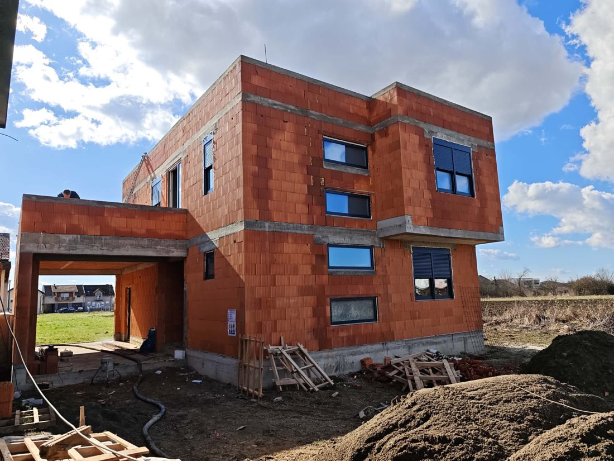
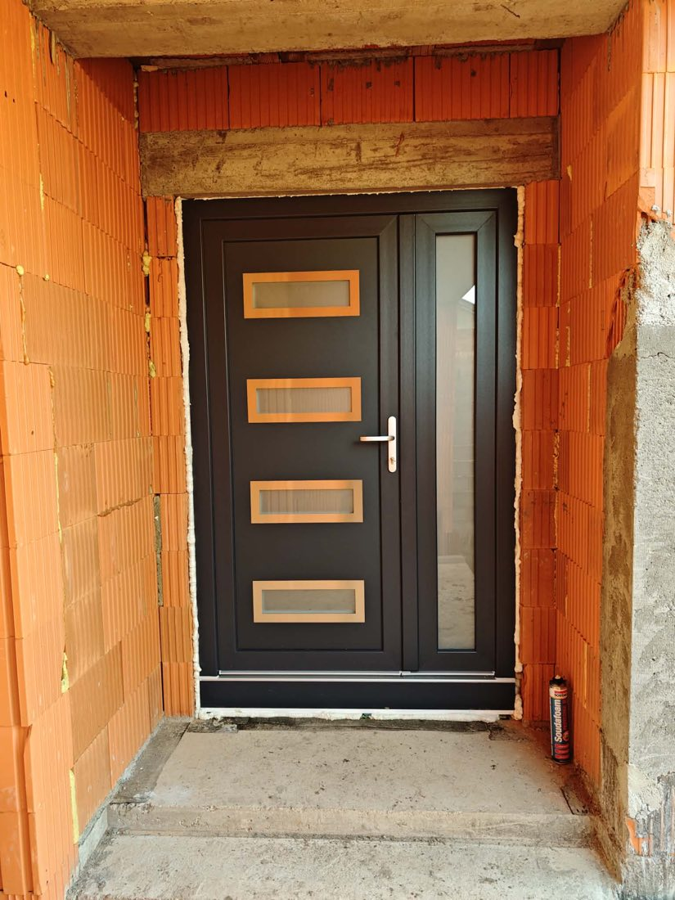
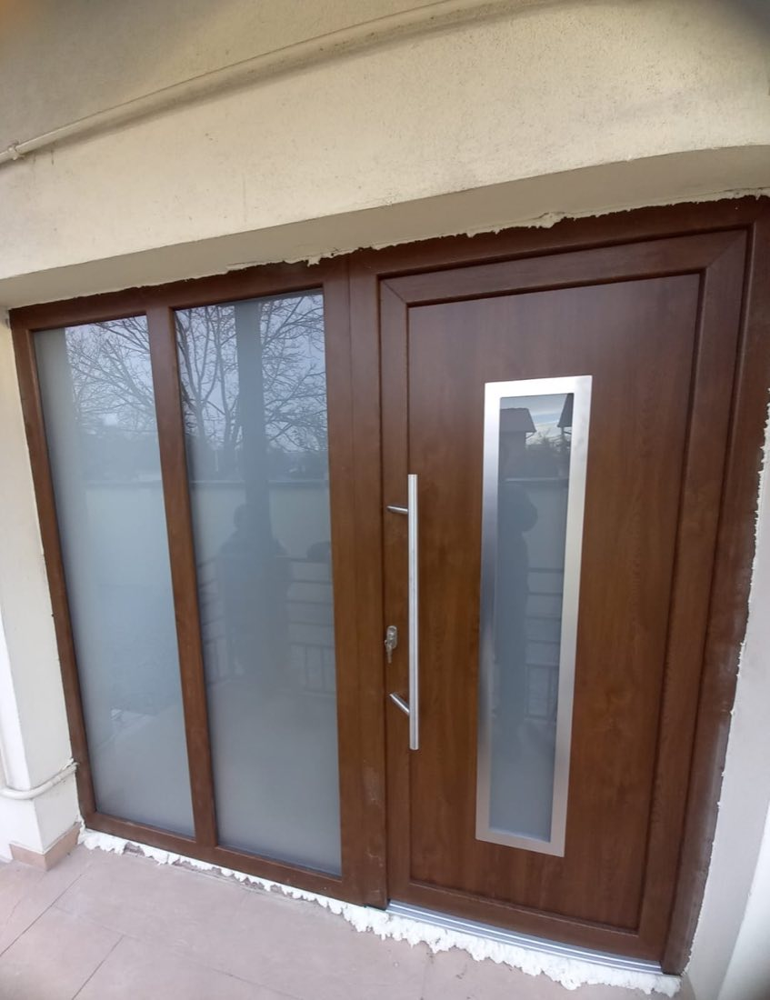
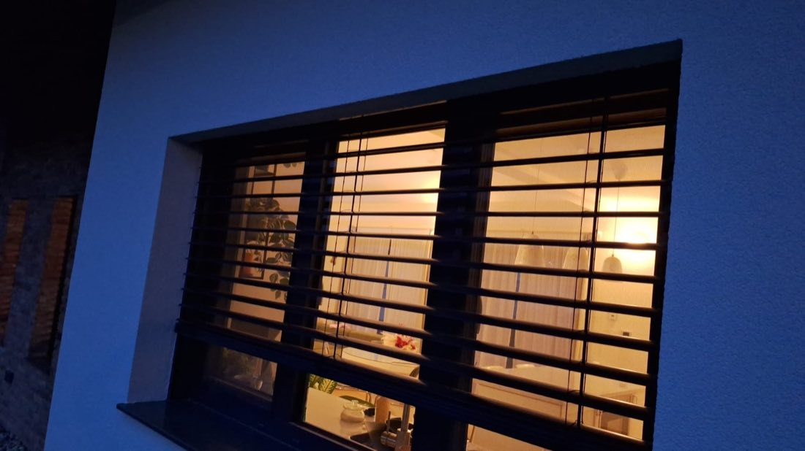
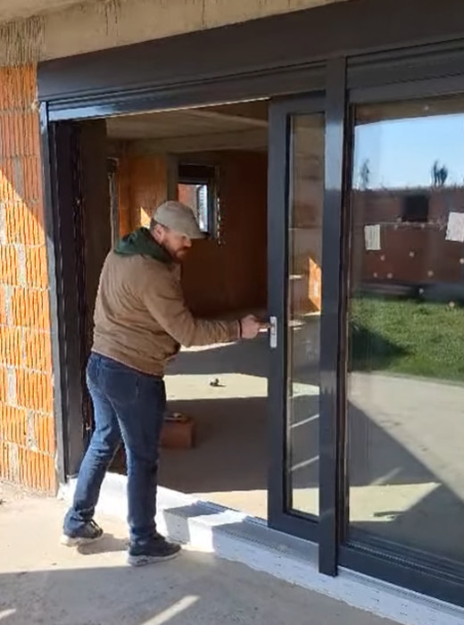
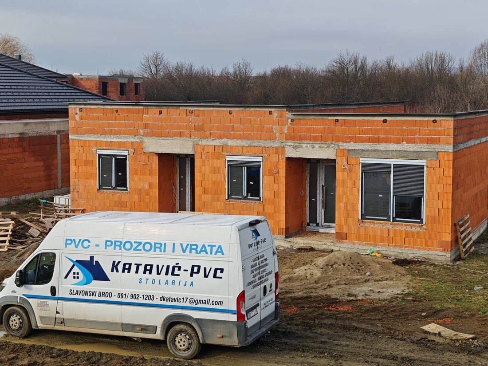

Prozori i vrata koji traju.
- ALU-PVC prozore
- ulazna vrata
- klizne stijene
- garažna vrata
- rolete i komarnike
- sobna vrata
Specijalizirani obrt za proizvodnju i montažu PVC i aluminijske stolarije. Više od 18 godina ugrađujemo stolariju u domove, od novogradnji do zamjene starih prozora.

stolarije
i montaža
Sve za otvore vašeg doma.
PVC i aluminijski prozori, klizne stijene, ulazna i garažna vrata te sva oprema koja ide uz njih. Na jednom mjestu, od proizvodnje do ugradnje.
ALU-PVC prozori
PVC profil za toplinsku i zvučnu izolaciju, aluminijska obloga izvana za otpornost i moderan izgled.
Više 02Ulazna vrata
PVC-ALU ulazna vrata: energetski učinkovita, otporna na vlagu i vremenske uvjete, u raznim bojama i dizajnima.
Više 03Klizne stijene
Više prirodnog svjetla i lak izlaz na terasu. PVC za izolaciju i cijenu, ALU za čvrstoću i velike staklene površine.
Više 04Garažna vrata
Sekcijska, rolo, krilna i klizna garažna vrata, uz mogućnost motornog pogona na daljinsko upravljanje.
Više 05Rolete
Aluminijske rolete štite od sunca, buke i pogleda te pomažu u regulaciji temperature u prostoru.
Više 06Komarnici
Fiksni, rolo, klizni i plisirani komarnici: svjež zrak bez insekata, prašine i peludi.
Više 07Klupice
Prozorske klupice od kamena, mramora, PVC-a ili aluminija štite zid od vlage i završavaju izgled fasade.
Više 08Sobna vrata
Zaokretna ili klizna sobna vrata od drva, stakla, MDF-a ili aluminija, u klasičnom ili modernom stilu.
VišeNaš rad, ugrađen.






Još fotografija s naših gradilišta
Pogledaj reference

Obrt Darka Katavića.
Katavić-PVC specijalizirani je obrt za proizvodnju i montažu PVC i aluminijske stolarije, u vlasništvu Darka Katavića, sa sjedištem u Slavonskom Brodu.
Naši glavni proizvodi su PVC i aluminijski prozori, klizne stijene te ulazna i garažna vrata. Stolarija je izrađena od kvalitetnih materijala, otporna na koroziju i vremenske uvjete i traži minimalno održavanje. Nudimo širok izbor boja, dizajna i rješenja, bilo da gradite novi dom ili renovirate postojeći prostor.
Zahvaljujući čvrstoći aluminija izrađujemo i velike staklene površine koje unose više prirodnog svjetla. Pratimo trendove i potrebe tržišta, a vi ste nam uvijek na prvom mjestu.
Radimo s provjerenim proizvođačima.
Od upita do ugradnje.
Upit
Nazovite, pošaljite e-mail ili obrazac s opisom i približnim mjerama.
Konzultacije
Zajedno biramo materijal, boju i vrstu otvaranja koja odgovara vašem prostoru.
Izrada
Stolariju izrađujemo po mjeri, prema dogovorenim rješenjima.
Ugradnja
Naš tim montira stolariju u vaš dom ili poslovni prostor.
Dobro je znati.
Što su PVC-ALU prozori?
To je kombinacija PVC profila i aluminijske obloge. PVC osigurava dobru toplinsku i zvučnu izolaciju, a aluminij s vanjske strane povećava otpornost na vremenske uvjete i daje moderan izgled. Laki su za održavanje i popularni su i za novogradnje i za renovacije.
Koja je razlika između PVC i ALU kliznih stijena?
PVC klizne stijene nude odličnu toplinsku i zvučnu izolaciju, ekonomičnost i jednostavno održavanje. ALU klizne stijene čvršće su i otpornije na vanjske utjecaje, pa omogućuju veće staklene površine i moderniji izgled.
Mogu li birati boju stolarije?
Da. Prozori, ulazna vrata i klizne stijene dostupni su u različitim bojama, dizajnima i završnim obradama, pa se mogu uskladiti s fasadom i interijerom.
Kakve komarnike nudite?
Fiksne, rolo, klizne i plisirane komarnike, od aluminija i PVC-a, prilagođene različitim vrstama prozora i vrata.
Kako dobiti ponudu?
Nazovite 091 902 1203, pošaljite e-mail na info@katavic-pvc.hr ili ispunite obrazac na ovoj stranici. Napišite što vam treba i približne mjere, a mi ćemo vam se javiti.
Recite nam mjere. Mi ćemo ostalo.
Opišite što trebate: broj prozora ili vrata, približne dimenzije, boju i gdje se ugrađuje. Javit ćemo vam se s ponudom ili dogovorom za konzultacije.